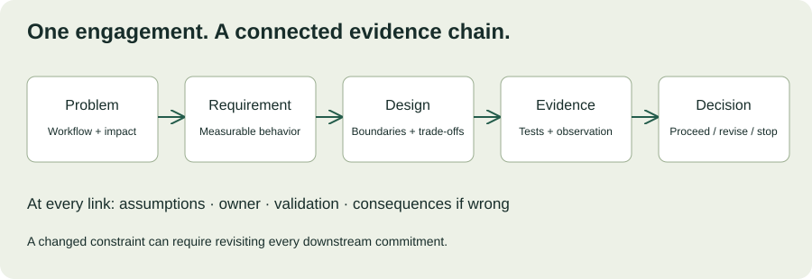

MODULE 03 · SYSTEM DESIGN & DELIVERY
You have practiced discovery, proposals, integration, deployment, and evaluation separately. A real engagement does not keep those concerns in separate boxes: a new API constraint changes scope, a launch delay affects the sponsor’s expectations, and a measurement gap changes the expansion decision.
This capstone asks you to connect the decisions. Produce a small, coherent engagement packet for a fictional customer, defend it against changing information, and identify the evidence needed before each commitment. All customer details are hypothetical training data. Your drafts and self-review stay in this browser; no customer systems are contacted.
What you will demonstrate
- Translate an ambiguous request into a testable customer outcome.
- Connect requirements to architecture, integration behavior, and acceptance evidence.
- Respond to scope changes without hiding trade-offs.
- Define a launch and support plan with explicit ownership.
- Evaluate results without overclaiming impact.
Allow 150–210 minutes, or split the work into three sessions. Prerequisites: Chapters 7–15. You do not need to build a production service. The deliverable is a defensible design and delivery packet, supported by test plans and clearly labeled assumptions.
16.1 The customer brief: Harbor Supply
Harbor Supply distributes industrial components from three warehouses. Operations estimates 600 order exceptions daily, including stock mismatches, missing dispatch scans, and inconsistent delivery status. Coordinators investigate exceptions across an order-management system (OMS), spreadsheets, and email. The operations director asks for “an AI control tower” in six weeks.
| Stakeholder | Stated concern | What you still need to learn |
|---|---|---|
| Operations director | “Reduce time spent chasing exceptions.” | Baseline effort, categories, consequences, decision authority. |
| Warehouse coordinator | “I need the evidence in one place.” | Actual workflow, accessibility needs, handoffs, missing context. |
| Integration lead | “The OMS API is shared with other services.” | Available quota, cursor behavior, identity scope, deletion semantics. |
| Security reviewer | “Warehouses must not see each other’s restricted records.” | Permission model, approved data fields, audit and retention requirements. |
| Support manager | “We cannot inherit a service without a runbook.” | Coverage, access, escalation, training, recovery expectations. |
The six-week window is a requested planning constraint, not a validated commitment. The customer has not approved autonomous order changes, external notifications, or production access. Start with a bounded, human-reviewed workflow and treat broader automation as a separate decision.
Discovery should investigate the underlying problem and constraints before committing to a preferred solution. The GOV.UK discovery guide is a useful reference for that distinction; its process is an example, not Harbor’s mandatory delivery policy. How the discovery phase works ↗
16.2 Build one connected evidence chain
Your packet should let a reviewer follow a customer problem all the way to a test and a decision. For example: coordinators repeatedly search for dispatch scans → show verified scan evidence with timestamps → ingest the relevant OMS records → test completeness and freshness → measure handling effort and correction rate → decide whether to expand.

Use identifiers to make traceability practical. Label a requirement R1, its design decision D1, its test T1, and its metric M1. The identifiers are navigation aids, not a substitute for reasoning. If a constraint changes, identify which links must be reconsidered.
Example traceability row
R1: An authorized coordinator can review eligible exceptions for their warehouse with visible source timestamps.
D1: Server-enforced record access and a versioned local evidence view populated by bounded ingestion.
T1: Authorized access succeeds; cross-warehouse record substitution fails; delayed source updates are visibly marked stale.
M1: Eligible task completion, handling effort, and correction rate over a defined evaluation window.
Open assumption: The OMS supports a recoverable incremental feed. Integration lead validates before delivery commitment.
16.3 Deliverable A — discovery and scope
Spend 25–35 minutes drafting a one-page engagement brief. Include the current workflow, the outcome sought, the people affected, and the most consequential unknowns. Choose an initial warehouse and exception category as a proposal, and explain why that scope is useful for learning.
Write five discovery questions about recent behavior rather than hypothetical enthusiasm. Ask how the last exception was resolved, where time was spent, what evidence was missing, who could authorize a change, and what happens when the process fails. Separate stakeholder estimates from measured facts.
Reviewer prompts
Can the brief make sense without mentioning AI? Does it identify who experiences the problem and how? Are estimates labeled? Does a boundary prevent a six-week pilot from silently becoming enterprise-wide automation? Is the next decision small enough to support with available evidence?
16.4 Deliverable B — architecture and integration
Spend 30–40 minutes drawing a context view and a component-responsibility view. Show the coordinator, identity provider, review API, evidence store, ingestion path, and OMS. Label trust boundaries and data movement. Explain how the design handles stale evidence, duplicate events, permission changes, and partial failure.
Estimate load using stated assumptions. Do not size solely from 600 exceptions/day if the integration must scan every order to discover those exceptions. Identify the actual read amplification and shared quota. Define a safe checkpoint and reconciliation approach; “retry on failure” is not enough.
You can describe your diagram here and keep a drawing separately. This chapter saves text drafts; it does not upload or store attachments. Use the local print action for a review copy of the written packet.
16.5 Change event — the API assumption fails
After your first design review, the integration lead confirms that the OMS has no incremental cursor. The available endpoint returns a full order snapshot and shares a rate limit with another application. The sponsor still wants “near real time,” but nobody has defined how fresh the evidence must be.
Choose your response
Update your architecture decision record and explain the customer impact in plain language. Preserve the desired outcome while negotiating a feasible delivery boundary. If no available option meets the requirement, say so and recommend the next evidence-gathering step rather than concealing the limitation.
16.6 Deliverable C — launch and support
Spend 20–30 minutes defining stages: representative validation, supervised use, and any proposed expansion. Each stage needs entry evidence, an audience, an owner, observation criteria, and a hold condition. Include a fallback workflow and a recovery rehearsal that tests the actual data and configuration state.
Use a launch checklist as a prompt for questions, not a certificate. Google’s published checklist is a historical example with infrastructure-specific assumptions; adapt its concerns to Harbor’s scale and operating model. Launch Coordination Checklist ↗
Challenge: support coverage is only available during staffed weekday hours. Explain how this changes your proposed pilot operation and how you would communicate that limit. Do not assign overnight responsibility to a team that has not accepted it.
16.7 Deliverable D — evaluation and expansion
Spend 20–30 minutes defining how Harbor will judge the pilot. Specify eligible tasks, baseline collection, case categories, handling-time definitions, quality guardrails, actual use, and support overhead. Name who checks instrumentation and who makes the expansion decision.
The sponsor later reports that ten users “love the tool.” Treat that as useful feedback, then ask whether representative tasks are completing successfully, whether the eligible population includes nonusers, and whether quality and effort have improved. A favorable quote does not replace a measurement contract.
16.8 Defend the packet in ten minutes
Use two minutes for the problem and outcome, three for the recommended design and alternatives, two for delivery and risk, two for evaluation, and one for the decision requested. These timings are practice constraints, not a required customer format.
| Reviewer challenge | A useful response addresses |
|---|---|
| “Why not just use our existing OMS?” | Verified native capabilities, unmet requirements, and total operating effort. |
| “Can you guarantee a 30% improvement?” | Baseline, comparable measurement, uncertainty, and a target distinguished from a guarantee. |
| “Why can’t we launch at all warehouses?” | Scope, representative evidence, access boundaries, capacity, and support. |
| “What happens if you leave?” | Named ownership, maintainable configuration, runbook, and receiving-team rehearsal. |
When you do not know, state what is unknown, what it affects, and how you will resolve it. Confidence comes from a clear decision process, not from pretending uncertainty has disappeared.
16.9 Interactive self-review
Score each dimension from 0 to 4: 0 absent; 1 assertion only; 2 partially specified; 3 clear and traceable; 4 supported by concrete evidence or a specific executable validation plan with owner and decision gate. For this simulated capstone, a plan must remain labeled as a plan. The total is a learning aid, not an independent assessment or production approval.
Review your engagement packet
Ask a peer to challenge your highest scores. A coherent packet should connect its sections: the launch scope must match the proposal, the metrics must reflect the workflow, and the integration assumptions must appear in the delivery risks.
Worked approach — one defensible direction
Propose a human-reviewed exception evidence workbench for one warehouse and one category, conditional on discovering a feasible data feed. Compare native OMS configuration before committing to custom software. Validate snapshot completeness and quota before selecting a freshness target. Keep external writes outside the first slice. Require record-level access tests, replay and recovery evidence, supported operating hours, and an agreed fallback before supervised use. Evaluate comparable tasks with quality and support guardrails before any expansion. This is a starting hypothesis, not the only correct architecture.
16.10 Evidence and reference library
Primary-source pages below were checked October 25, 2026. Revisit the academy chapters alongside them.
- How the discovery phase works — challenge the requested solution and map constraints.
- Launch Coordination Checklist — adapt the historical questions to your proposed deployment.
- Chapter 12: System design — boundaries, failure behavior, and architecture decisions.
- Chapter 15: Outcomes and adoption — measurement definitions and expansion evidence.
16.11 Capstone knowledge check
16.12 Close the engagement loop
Your final packet should explain what the customer needs, what you recommend, what could invalidate it, and how the next decision will be supported. That is the through-line from SWE to FDE: technical implementation connected to customer context, explicit responsibility, and measurable outcomes.
Choose one weak dimension from your self-review and revise the corresponding artifact. Record what changed and why. Preserve the distinction between a completed learning exercise and evidence from a real deployment.
Field notes
What would you now do differently in your next customer engagement?